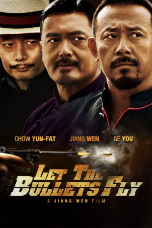

#7929 Let the Bullets Fly - Tödliche Kugeln
 
 IMDB-Wertung: 7.3 / 10
IMDB-Wertung: 7.3 / 10  Metascore: 0
Metascore: 0 
Set in China during the warring 1920s, notorious bandit chief Zhang descends upon a remote provincial town posing as its new mayor, an identity that he had hijacked from Old Tang, himself a small-time imposter. Hell-bent on making a fast buck, Zhang soon meets his match in the tyrannical local gentry Huang as a deadly battle of wit and brutality ensues.
Jahr: 2010
Dauer: 132 Minuten
FSK: 16
Land: China Studio: New KSMTonspuren:
Untertitel: Deutsch,
Auflösung: 1080p (1920x816) Größe: 9103 MB
Genre: Action, Komödie, Western
Regisseur: Wen Jiang
Drehbuch: Junli Guo
Soundtrack: Joe Hisaishi, Nan Shu
Darsteller:
 Yun-Fat Chow als Master Huang
Yun-Fat Chow als Master Huang- You Ge als Ma Bangde
- Wen Jiang als Pocky Zhang
 Carina Lau als Mrs. Ma
Carina Lau als Mrs. Ma Jun Hu als Fake Pocky
Jun Hu als Fake Pocky Wu Jiang als Master Wu
Wu Jiang als Master Wu- Fan Liao als Three
 Kun Chen als Hu Wan
Kun Chen als Hu Wan- Mo Zhang als Six
- Xiaogang Feng als Counselor Tang
- Pu Miao als Shanxi MIstress
- Yun Zhou als Flora
- Ming Hu als Sun Shouyi, powder trader
- Marco Ma als Ba Sui
- Bing Shao als Two
- Adam S. Shen als Li Ming An
- Xiao Wei als Seven
- Xiang Wen als Huang's Double Yang Wanlou
- Lu Yao als Hu Qian
Datei: X:\HD-Eastern-Modern(A-M)\Let the Bullets Fly - Tödliche Kugeln (2010, FSK16, 1920x816).mkv seit 07.01.2018
Festplatte: HD Eastern+Western
 Es gibt insgesamt 104 Filme in der Gruppe 'HD-Eastern-Modern(A-M)'
Es gibt insgesamt 104 Filme in der Gruppe 'HD-Eastern-Modern(A-M)'